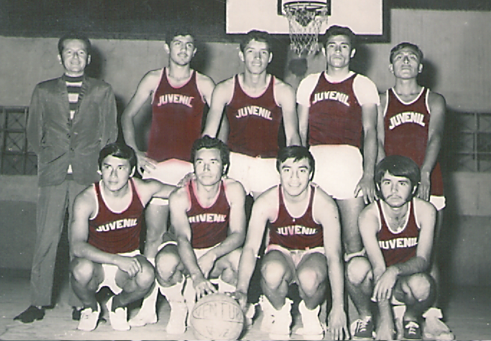
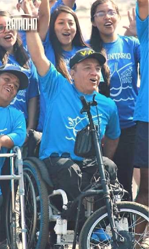

Si alguien nos puede enseñar de retos y logros obtenidos ese en mi amigo Néstor Francisco Ventura Zapata el popular “Pancho Aventura”.
Campeón Para-Panamericano de tenis de mesa 1978 en Puerto Rico y de un centenar de medallas representando a la región Lambayeque, Director Regional de Electricidad, Campeón en Tenis de mesa Olimpiadas Distriluz, Bailador de marinera sobre silla de ruedas por excelencia, y un valor como persona digno de admirar e imitar.

Con una sonrisa contagiosa y de hablar pausado pero continuo ese es Pancho. “Sentado”; aunque es un poco sarcástico decirlo; en frente a un computador en su centro de labores de una empresa comercializadora de servicios eléctricos de Lambayeque, realiza sus labores de apoyo en el Centro de Control de la empresa de electricidad. Esta labor no impide para nada cualquier oportunidad de participar en cualquier disciplina deportiva se le cruce por la mente. Siempre buscando nuevos retos, apoyando a las personas con habilidades distintas, motivándolos, acompañándolos, participando en voluntariados. Así es Pancho como dije anteriormente digno de imitar y respetar.
A veces me pregunto; y alguna vez se lo hice personalmente, ¿Cómo sería si no estaría sobre ruedas...?, puede parecer tonta la pregunta, pero, particularmente (con las disculpas por mi incapacidad mental) le pregunte si habría logrado todo en otras condiciones. Lo que pasa es que (creo) que las dificultades sirven para descubrir nuestras potencialidades, mientras estemos “bien”, cómodos, no tenemos la necesidad de “preocuparnos” por algo más que lo necesario. Lo digo solo como reflexión personal. Quizás alguien no comparte esta idea, pero soy honesto, soy un tipo que por lo general pulula en su zona de confort, pero para recomendar soy bueno.
Pancho, hace un par de años se sometió a una operación, luego, mientras se recuperaba se acercaba la realización de una olimpiada interna y como no podía participar (hacer movimientos bruscos) me comentó que ya estaba asistiendo al club de tiro. Así de comprometidos es, lleva el deporte en la sangre.
Para complementar este pequeño homenaje no puedo dejar de mencionar que también es un bailarín no solo de marinera sobre silla sino de salsa y cualquier música que se le “cruce”. Recuerdo que estábamos en una celebración en el Jockey Club, superaba la media noche y el nivel de emoción acompañado de los “saludos” (salud contigo salud con todos) habían sobrepasado los niveles medios y pancho saltó al ruedo, sacó a la pareja y se puso a bailar salsa, más o menos a mitad pidió que le “quitaran” las muletas y pa’ que te cuento, Pancho con la muleta en lo alto empezó a menearse. Todos vitoreaban hey, hey, hey y el mismo era, pero solo por unos momentos porque necesitaba de su apoyo.
Lo que siempre lamentaré, es que una vez, después de una “reunión” le “pase” literalmente las ruedas del carro sobre los pies. Sin bronca, solo nos dimos cuenta por las huellas en sus zapatos. Amén de la “reuniones” que pasábamos los fines de año en Chongoyape en casa de los Bernilla. La aventura empezaba al salir de Chiclayo rumbo a la tierra del “Racarrumi y Chaparrí”. Todo el trayecto la pasábamos contando anécdotas, historias y momentos que habíamos pasado en el trabajo ya que los que íbamos laborábamos en la misma empresa. Una vez llegado a Chongoyape hacíamos los preparativos para preparar la “pachamanca” con piedras traídas especialmente de Huancayo. Era todo un protocolo y espectáculo, así podíamos pernoctar unos días hasta que pasado el año nuevo estábamos de regreso de nuevo a las labores. Qué tiempos aquellos, tiempos de juventud dorada.
En la imagen opuesta lo vemos en una de las tantas actividades de apoyo a un voluntariado. La "silla" acondicionada para la ocasión lo ensambló el mismo, le permite tener más control, no como la vez que participo en una olimpiada con el baile de Marinera donde por hacer un movimiento osado se fue de "bruces" a la pista. Solo un día antes le habíamos dicho en broma que con esa ganábamos, pero "parece que lo tomo en serio".

Para finalizar, dar gracias que mi familia tenemos el privilegio de conocer y haber compartido momentos muy amenos y significativos con Pancho. Esperamos que siga dándonos ejemplo de vida y coraje ante cualquier vicisitud de la vida y que el agradecimiento de cada persona que apoyó lo ayude a superar cualquier cosa. Como dice un dicho “La vida te da un cheque en blanco, lo que llenes es lo que recibes” y Pancho ha ayudado a muchas personas en distintas maneras. Gracias Pancho y pa’ delante.